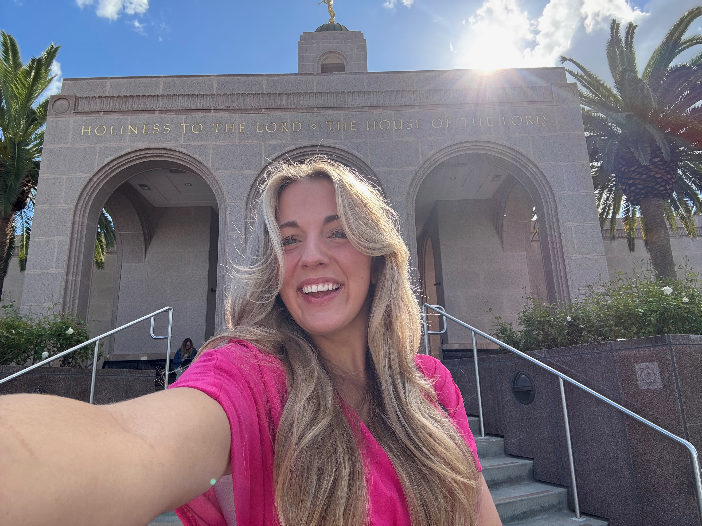
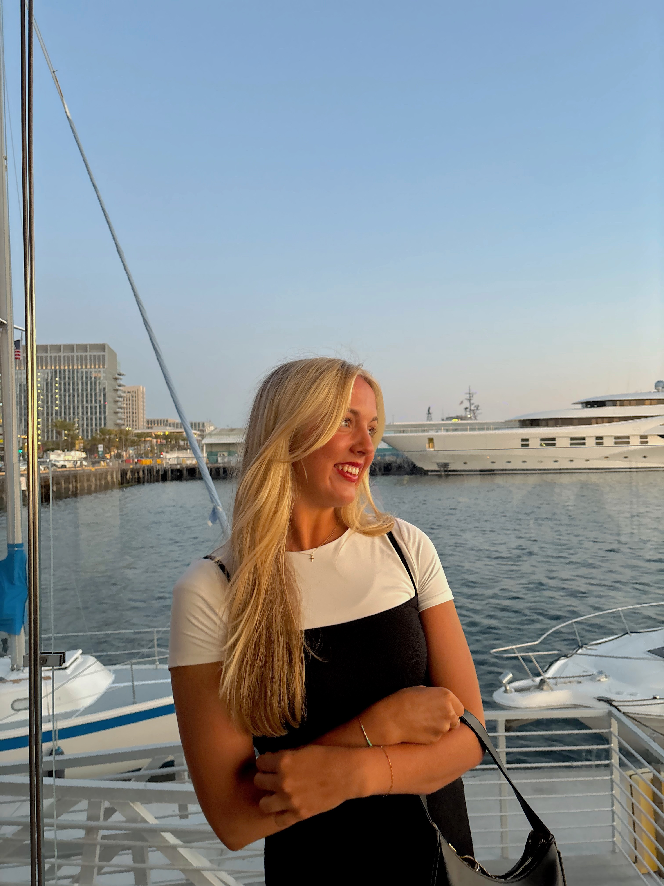

Home |
Resume |
About Me
About Me
I’m Natalie, originally from Arizona and now a business student at BYU. I’m an aspiring serial entrepreneur who loves turning ideas into real products and experiences. Between my coursework and hands-on projects, I’m building skills in marketing, finance, and brand development and exploring new business ventures.


- What I Care About
- Creating products and experiences that genuinely improve people’s lives
- Building a life rooted in learning, discipline, service, and personal growth
- Approaching challenges with curiosity, creativity, and a desire to make things better than I found them
- creating real connection with people
- What I’m Working On Right Now
- Building out a women’s clothing brand focused on non-see-through, high-quality white basics
- Developing new business ideas through my entrepreneurship coursework and real-world experience
- creating edifying relationships taht will last a lifetime
- What Brings Me Joy
- Hosting people — from casual hangouts to more intentional gatherings
- Finding new music, making playlists, and always having something playing in the background
- Slow moments with the people I love
- Trying new things, and being adventurous
- What Matters Most to Me
- My Faith and my family
- Surrounding myself with uplifting, inspiring people
- Bringing positivity and care into every environment I’m part of
- Working hard and being efficient while having fun
- Creating a life that feels warm, intentional, and connected
Back to the Top Top